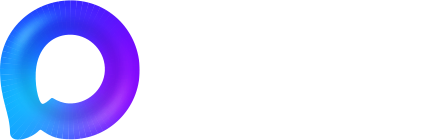
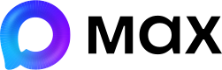
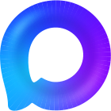

MAX — рабочие материалы из экспорта
Технический образец пакета 0.1.0: настоящие SVG и локальные Max Sans. Проверяется загрузка и применение ресурсов. Это не утверждённый рекламный макет; размеры карточек и текста выбраны для этой проверки.
Логотипы

Основной · однотонный тёмный фон
Источник: 1.2, 8379:53647

Основной · однотонный светлый фон
Источник: 1.10, 8379:53920

Монохром · фирменный градиент
Источник: 1.4, 8379:53813

Фирменный знак · оригинальный SVG

Монохромный знак · оригинальный SVG
Проверка кириллицы и ролей шрифта
Общение начинается
с простых слов
Подзаголовок — Max Sans Medium, 500
Основной текст — Regular, 400. Ёж, съёмка, связь, № 12345. Заголовок — DemiBold, 600.
Light, 300 — только для исключительных случаев.
Bold, 700 — только для исключительных случаев.
Проверенные значения цветов
#00BFFF
#6E1AFF
#0D001A
#9500FF
#FFFFFF
«Синий гигант» не включён: HEX #471AFF расходится с RGB и заливкой карточки. Это открытый вопрос источника.
Main — линейный образец
Три остановки из узла 8379:54393: #00BFFF → #5B33FF на 50,480771% → #9500FF. Angular-фон и Glass Effect требуют отдельного переноса; эта полоса их не заменяет.
Как использовать пакет · Правила и источники · Происхождение файлов